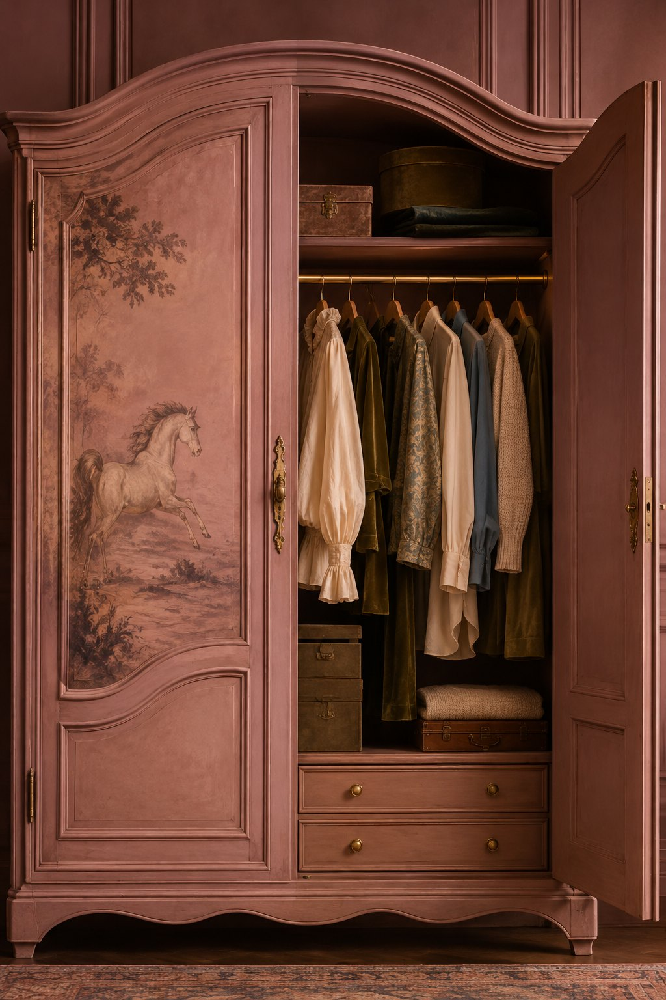

About The Kit Edit
A ToolKit for your closet.
Did you know the average woman says “I have nothing to wear” 612 times a week? Okay, maybe that's not research-based, but it feels close to reality for many women.
The Kit Edit removes the stress from getting dressed. A tailored experience to help you love what you already own.
Let us create a wardrobe from your current closet. We'll develop your personal style, source any missing pieces within any budget, and simplify the getting-ready process by providing a custom lookbook tailored to you.
Work with us